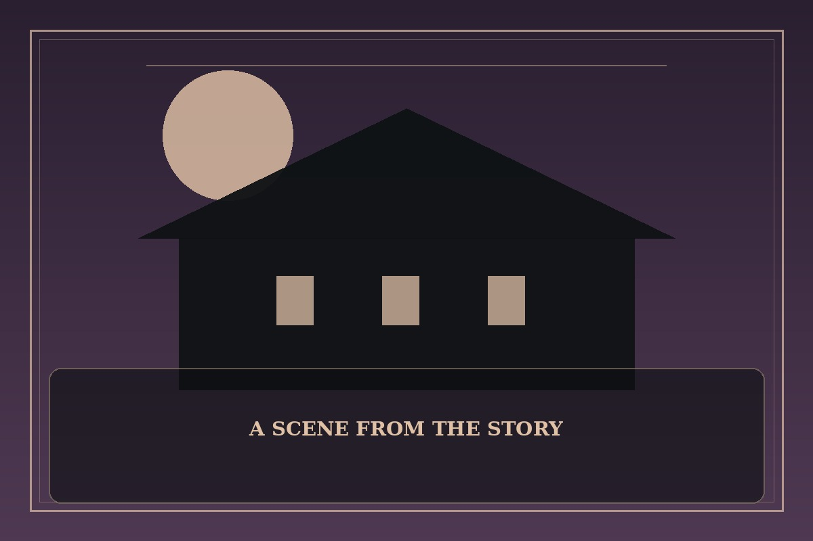

Eleceed
Synopsis
A kind-hearted young man discovers a hidden community of people with extraordinary abilities and an unexpected mentor. Friendship and compassion become essential in a world that prizes power.
Chapter 1: A Cat with Too Many Opinions
The stray cat in the alley spoke before Jiwoo had finished opening the packet of food. It criticized his posture, his shoes, and the way he had nearly tripped over a perfectly visible step.
Jiwoo stared, then asked whether the cat wanted more food. The animal looked offended by the question and introduced himself as a highly experienced mentor who had temporarily acquired a smaller body. His advice was sharp, but his attempts to leap onto a chair were less impressive.
Over the next week, Jiwoo learned to move faster and listen more carefully, while the cat learned that kindness was not the same as weakness. Their training sessions were noisy, awkward, and often interrupted by snacks. Somehow, that made the lessons easier to remember.

This fan-made sample is an original piece created for a student website project; it is not an official chapter of Eleceed.